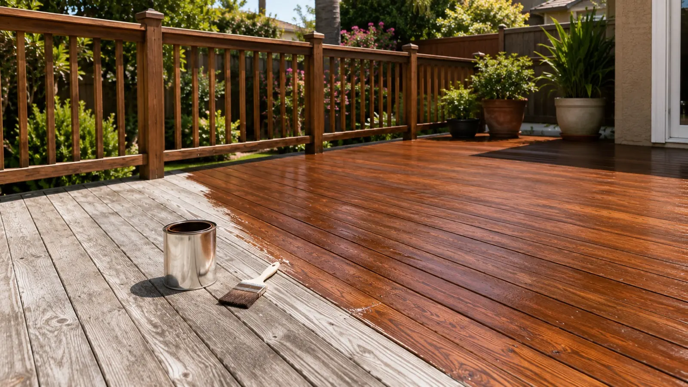
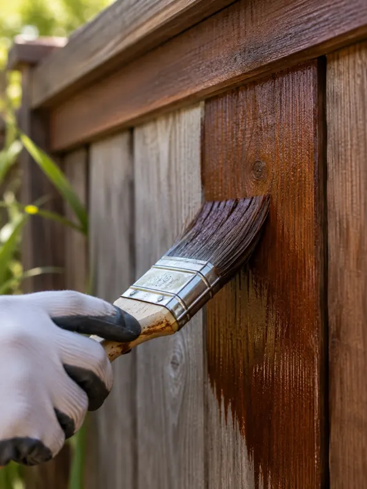

Deck & Fence Staining in Burbank, CA
Wood decks and fences cleaned, repaired, and sealed by a local crew, with a written price before we start.
Call us today (857) 371-3693What it costs Homewyse's May 2026 national estimates run $2.96 to $6.16 per square foot for deck staining and $1.33 to $2.71 for fence staining, and they do not include repairs. Your written quote shows the real number for your wood.
What we stain Wood decks, stairs, railings, fences, and gates, plus board repairs and a wash before every job.
Free estimate We look at the wood in person and hand you a written price, usually within two days of your call.
How we prep Wash off dirt and old finish, let the wood dry all the way through, tighten fasteners, replace damaged boards, then stain.
Local conditions NOAA's 1991 to 2020 normals count 53.9 days a year at 90°F or hotter, and about 92% of the year's 13.91 inches of rain falls November through April, so wood gets baked, then soaked.
Where we work Burbank, Glendale, North Hollywood, Toluca Lake, Studio City, and La Crescenta.
What We Stain Around Your Home
Deck staining in Burbank, CA protects the wood outside your home from sun and rain, and our crew handles every step: washing, repairs, drying, staining, and cleanup. It is for homeowners whose deck or fence has turned gray or rough, and the result is wood that looks richer and lasts longer between jobs. One visit can cover both deck staining and fence staining. Our home page covers the full list of services.
- Decks. Floor boards cleaned, dried, and stained so the grain stays visible and the surface stays walkable.
- Stairs and railings. The spots that get touched and walked on most, stained so they wear evenly.
- Fences and gates. Boards, rails, and caps washed and stained on the sides you can reach.
- Prep and repairs. A wash before every job and replacement of damaged boards, covered below.
How Your Deck Staining or Fence Staining Job Works
- Call or send the form. Tell us what you want stained and roughly how big it is. We call back, usually the same day.
- We look at the wood. We check the boards, press on suspect spots for soft wood, and see how much old finish is left. You pick a stain type and color, and we can test a small patch.
- You get a written price. It lists the work, the repairs, the stain, and the cost, usually within two days of your call, with no pressure to say yes.
- We wash, repair, stain, and clean up. The wood gets washed and dried completely, damaged boards are swapped, and the stain goes on. We tell you how long to stay off it, based on the product label.
Ready to start? Call (857) 371-3693, or use the form at the top of this page.
Get a free quoteWhat Deck Staining and Fence Staining Cost
Every property is different, so your written quote is the only number that counts. These national estimates give you a starting point for comparing bids.
- $2.96 to $6.16 per square foot, deck staining with 2 coats
- $1.33 to $2.71 per square foot, fence staining with 1 coat
- Not included repairs to existing boards, which are quoted separately
National estimates: Homewyse, May 2026, for popular oil-based semi-transparent stain, with the wash as an option. Local bids can run higher or lower, so ask for a written quote.
What moves your price
- Size. More square footage of deck, or a longer run of fence, means more hours and more stain.
- Condition. Gray, dry wood and flaking old finish need more cleaning and sanding than wood that has been kept up.
- Repairs. Split, soft, or rotten boards are swapped before staining, and that work is quoted on top.
- Stain type. Solid, semi-transparent, and clear stains differ in price and in how often they need redoing.
- Coats. A deck takes more wear than a fence, so it usually gets more coats.
Prep and Repairs Done Before Staining
Stain only holds on clean, dry, sound wood, so we handle the prep that decides how long the finish lasts and tell you when a job needs a carpenter instead.
Washing and drying
Every job starts with a wash that lifts dirt, mildew, and what is left of the old finish, because new stain will not hold on top of grime. Then the wood dries all the way through, since stain over damp wood does not soak in.
Board replacement
Boards that are split through or soft when pressed get replaced before staining, since stain on rotten wood fails quickly. We handle board swaps that belong to a staining job, and a full deck rebuild is a carpenter's work.
Fasteners and splinters
Loose nails and screws get tightened or reset, and rough spots get sanded smooth, so the finished surface is safe to walk on barefoot.
Protecting what is around it
Plants, siding, and furniture get covered or moved before staining starts, so overspray and drips stay on the wood and off your house.
What a Written Deck Staining Quote Should List
Ask every contractor for the same details in writing so you compare like with like. Ours is in writing too.
- What gets stained. The deck floor, stairs, railings, fence sides, and gates that are included.
- Prep and repairs. The washing, sanding, and drying included, and the price of any board replacement.
- The stain. The brand, type (solid, semi-transparent, or clear), and color.
- Coats and timeline. How many coats go on, the start date, and how many days the job takes.
- Drying and use. How long to stay off the deck, per the product label.
- Guarantee. What the workmanship guarantee covers, written into the quote.
Where We Do Deck Staining and Fence Staining
We do deck staining and fence staining throughout the city and in Glendale, North Hollywood, Toluca Lake, Studio City, and La Crescenta. In the Rancho Equestrian District, lots are zoned for horses and have stables and stalls (Wikipedia counts about 785 single-family homes there), so there is more outdoor wood to protect. Tell us your street when you call and we will book the estimate visit.
Booking Your Staining Job and the Guarantee
Staining needs dry wood and dry weather, so we schedule around the forecast and move your start date if rain is coming. You hear from us before we change anything, and the new date goes in writing.
The workmanship guarantee is written into your quote, along with what it covers and for how long. To get on the schedule, call (857) 371-3693 or send the form at the top of this page, and we will set up a free estimate visit.
Get a free quote
When You Need Deck Staining or Fence Staining
Bare wood tells you when the finish is gone, and waiting dries the wood out deeper, which makes the job bigger. Look for these signs:
- Gray or silvery wood. The color has bleached out and nothing protects the fibers.
- Water soaks in. Sprinkle a little on the boards. If it darkens the wood instead of beading up, the finish has worn off.
- Rough or splintering spots. You feel them underfoot, usually first on stairs.
- Thin stain at high-touch spots. Stair edges, railings, and gates wear first.
- Dark patches. Mildew and moisture are settling into the grain.
Painting the siding or trim instead? See our exterior painting page.
Why Deck and Fence Wood Fails
Unprotected wood takes a beating from three directions at once, and most early stain failures come down to prep.
- Sun. Ultraviolet light breaks down the surface fibers and bleaches out the color.
- Moisture. Water that gets in swells the grain and eventually leads to rot, especially on horizontal boards.
- Foot traffic. It grinds the finish away unevenly, fastest on stairs and around gates.
- Skipped cleaning. Stain brushed over dirt or old flaking product does not bond, and it wears off in months.
- Staining damp wood. Stain cannot soak into wet fibers, so it stays on the surface and peels.
Left alone, the surface roughens and boards start to cup and split, which turns a restain into a repair.
Solid, Semi-Transparent, or Clear Stain?
The stain type changes how the wood looks and how often it needs redoing. Product lines vary, so the label on the can has the specifics.
| Stain type | Look | Best for | Tradeoff |
|---|---|---|---|
| Solid | Covers the grain with an opaque color | Older or mismatched wood that needs a fresh look | Hides the grain, and can wear or peel on busy deck boards |
| Semi-transparent | Adds color while the grain shows through | Most decks and fences in decent shape | Wears evenly, but needs refreshing as it fades |
| Clear or transparent | Natural tone with a light tint | New or well-kept wood where the grain is the point | Least protection from sun, so it wears fastest |
How Burbank's Sun and Rain Work on Wood
Wood outdoors here gets long, hot, dry summers and a short wet season. These figures come from NOAA's 1991 to 2020 climate normals for the airport weather station.
- 53.9 days a year at 90°F or hotter
- 13.91 in of rain in a normal year
- 92% of that rain falls November through April
NOAA 1991 to 2020 climate normals, airport weather station USW00023152.
Sun-facing boards dry out and gray first, and the wet months then soak whatever finish is left. Because wood has to be dry before it is stained, the long dry stretch is when staining jobs happen, with May and June the best windows, then October. The painting calendar on our home page shows the full month-by-month breakdown.
Decks and Fences: What Each Needs
Decks and fences wear out in different ways, so each gets its own prep and its own stain strategy.
| Wood | What wears it out | What we do |
|---|---|---|
| Deck boards | Sun, standing water, and foot traffic | Deep wash, dry, sand rough spots, and apply stain in even coats |
| Stairs and railings | Hands and feet on the same spots every day | Extra attention to edges and treads, which wear through first |
| Fence boards and rails | Sun on one side, moisture at the ground line | Light scraping, wash, and stain, with the bottom edges checked for rot |
| Gates | Constant movement and loose hardware | Tighten hardware, then stain every edge so moisture cannot get in |
Restain or Replace the Boards?
Not every gray, weathered deck or fence needs to come apart. We tell you honestly which boards are worth saving and which are not.
| What we find | Best call | Why |
|---|---|---|
| Solid boards with a failed finish | Wash and restain | Clean wood takes new stain well and comes back looking new |
| A few cracked or split boards | Replace those, restain all | Swapping the bad ones keeps the rest looking even |
| Boards that feel soft or spongy | Replace | Rot goes deeper than the surface, and stain cannot fix it |
| Damage across most of the surface | Talk to a carpenter | A rebuild is a different trade, and we say so before you spend on stain |
Deck Staining and Fence Staining Questions, Answered
How much does deck staining cost?
Homewyse's May 2026 national estimate is $2.96 to $6.16 per square foot for a deck with two coats of oil-based semi-transparent stain. Repairs to existing boards are not included, and neither are local differences, so we put your total in writing before work starts.
How much does fence staining cost?
Homewyse's May 2026 national estimate is $1.33 to $2.71 per square foot, based on one coat. A fence is cheaper per square foot than a deck because it sees less wear, but a long run adds up, so the written quote lists the total.
How long does a staining job take?
It depends on the size of the deck or fence, the condition of the wood, and how long it needs to dry after washing. Your written quote lists a start date and the number of days, and we tell you early if repairs or weather change the schedule.
How soon can I use the deck again?
Follow the product label for the stain we use, which lists when you can walk on it and when furniture can go back. We write the stay-off time into your quote, since the stain needs to cure, not just feel dry on top.
Do you build or replace whole decks?
No. We stain decks and fences and replace damaged boards that belong to a staining job. A full deck build or rebuild is carpentry, and we will tell you if your deck needs that before you spend money on stain.